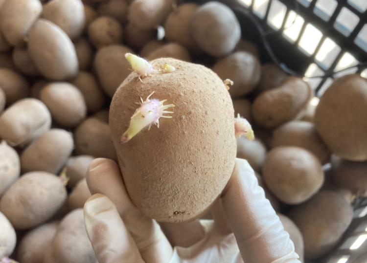
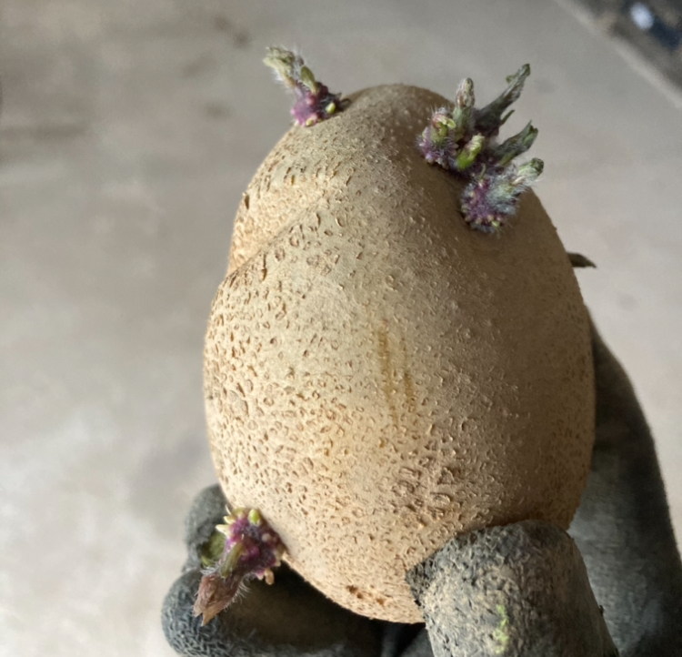

| 一、基本信息 |
| 品种 |
利哈伊土豆（中晚熟品种） |
| 种植时间 |
4月15日-5月初（地温10度以上左右并稳定，土壤不潮湿时种植，温度太低会导致不出苗，容易腐烂。） |
| 生长周期 |
90天 |
| 温度 |
土豆是一种喜凉作物，与其他作物相比生长温度低一些。
- 苗期最适宜生长温度为16-22℃，27℃以上高温会导致叶片皱缩，32-34℃茎叶生长缓慢，超过40℃停止生长。
- 块茎膨大最适宜温度为17~19°C，温度超过 29°C以上块茎停止膨大。
|
| 光照 |
土豆是喜光作物，光照强度不足或栽植过密，会使茎叶徒长，块茎形成延迟，抗病能力降低。 |
| 土壤 |
土豆喜欢疏松透气、有机质含量高、排水良好的沙壤土。土太粘、土面板结会推迟出苗时间，影响根系的扩散和植株生长，造成植株矮小、叶片卷皱，署块畸形等问题。 |
| PH |
喜酸不耐碱， 5.5-6.0 （可抗黑星病） |
| 株行距 |
行距75cm, 株距22.5cm. |
| 种植深度 |
种植深度：8cm左右（土豆距离土面） |
| 二、种植前准备 |
| 催芽 |
| 催芽方法 |
机器播种不需要催芽，只需在种植前一周，将种薯从恒温库拿出来在常温条件下存放，使其热身打破休眠即可。 |
小菜园种植，各家据土豆保存的情况，
- 如果保存的好，一直没长芽，就在播种前半个月左右拿到常温的地方让它发芽，等芽长到1公分左右，让其渐暴露在散射光（非阳光直接照射）下壮芽。
- 如果保存的不好，土豆提前长芽了，就把芽子掰掉，避免土豆芽长的太长消耗能量，然后放在常温下防止1-2周，让其再次发芽。等芽长到1公分左右，让其渐暴露在散射光（非阳光直接照射）下壮芽。
|
| 注：芽点见光以前是白色，比较脆弱、易断，见光以后会变成紫色，不易折断。 |
注意事项
- 不要将种薯直接放在太阳底下晒
- 轻拿轻放，防止断芽
- 保存种子的地方不能太干燥，容易缩水。
|


|